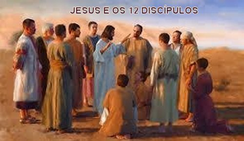
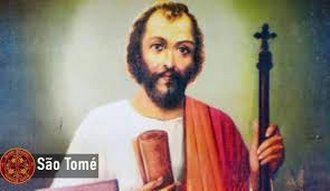
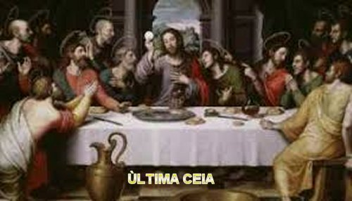
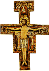

“HOMEM DE DEUS”
DISCÍPULOS DO SENHOR
JESUS no inicio da Vida Pública,
escolheu os seus Discípulos, auxiliares preciosos que testemunharam a sua
maravilhosa obra em benefício da humanidade de 
Na Bíblia (Novo Testamento) encontra-se escrito os nomes de todos eles. Assim, encontramos a relação no Evangelho de São Mateus, no Evangelho de São Marcos, no Evangelho de São Lucas e no Evangelho de São João, os nomes dos Doze Discípulos escolhidos por JESUS. Depois de escolhidos, NOSSO SENHOR lhes fez especiais recomendações, dando-lhes plena e total autoridade para expulsar os espíritos imundos e de curar toda a sorte de males e enfermidades. “São Eles: Simão, também chamado de Pedro, e André, seu irmão; Tiago, filho de Zebedeu, e João, seu irmão; Felipe e Bartolomeu; Tomé e Mateus, o publicano; Tiago, filho de Alfeu, e Tadeu; Simão, o Zeloso, e Judas Iscariotes, aquele que O traiu”.(Mt 10, 2-4)
PESCADOR GALILEU


RESSURREIÇÃO DE LÁZARO
Este comentário acima, fica bem em evidência ao recordarmos a morte de Lázaro em Betânia, próximo a Jerusalém, onde ele residia na companhia das duas irmãs Marta e Maria. NOSSO SENHOR era muito amigo de Lázaro, e as duas irmãs respeitosamente amavam JESUS. Maria foi aquela que numa visita do SENHOR, ajoelhou-se diante DELE e ungiu os SEUS Pés com um precioso perfume, e em seguida, enxugou-os com seus longos cabelos. Lázaro vivia muito doente; com o agravamento das complicações na sua saúde, veio a falecer. As duas irmãs tristes e preocupadas com o acontecimento enviaram um mensageiro para avisar a JESUS que se encontrava distante da Judéia, pois recentemente os judeus procuraram matá-lo a pedradas. Ao receber a notícia, NOSSO SENHOR, no tempo certo, avisou aos Discípulos da SUA disposição de ir ver Lázaro. Os Discípulos preocupados com a violência dos judeus, disseram: “Rabi, há pouco, os judeus procuraram lapidar-Te e vais outra vez para lá?”(Jo 11,8). JESUS então lhes falou claramente: “Lázaro morreu. Por vossa causa, alegro-me de não ter estado lá, (no momento da morte dele) "para que creiais" (ou seja, para que os Discípulos e as demais pessoas acreditassem no imenso poder Divino de JESUS que ressuscita os mortos. Por isso ELE completou). "Mas vamos para junto dele!”(Jo 11,14-15). Tomé que estava presente e tinha plena convicção de que JESUS era um enviado de DEUS, considerou justa e corajosa a atitude DELE, apesar das ameaças de morte por parte dos judeus. Assim, olhando para os demais Discípulos estimulou a coragem de todos dizendo-lhes com voz forte: “Vamos também nós para morrermos com ELE!”(Jo 11,16).E viajaram no mesmo dia. E como descreve o Evangelista, JESUS chegando dirigiu-se ao tumulo onde Lázaro estava sepultado. Mandou retirar a pedra que fechava a entrada e ergueu os olhos ao Céu dizendo: “PAI, dou-TE graças porque ME ouviste. EU sabia que sempre ME ouves; mas digo isto por causa da multidão que ME cerca, para que creiam que ME enviaste”. Depois, olhando para Lázaro morto, gritou com voz forte: “Lázaro, vem para fora!” Imediatamente ele ressuscitou e levantou-se cheio de vida, com os pés e as mãos enfaixadas e o rosto coberto com uma toalha (sudário), de acordo com o costume judeu de sepultar os mortos. JESUS disse: “Desatai-o e deixai-o ir-se”. (Jo 11, 41-44)Todos ficaram alegres e muito felizes comemoraram.
ÚLTIMA CEIA


Disse JESUS: “Não se perturbe o vosso coração! Credes em DEUS, crede também em MIM. Na casa de MEU PAI há muitas moradas. Se não fosse assim, EU vos teria dito, pois vou preparar-vos um lugar, e quando EU ME for e vos tiver preparado o lugar, EU virei novamente e vos levarei COMIGO, a fim de que, onde EU estiver, estejais vós também. E para onde vou, conheceis o caminho.”(Jo 14, 1-6).
São Tomé então perguntou: “SENHOR, não sabemos para onde vais. Como podemos conhecer o caminho?” (Jo 14,5) JESUS disse: “EU sou o Caminho, a Verdade e a Vida. Ninguém vem ao PAI a não ser por MIM".(Jo 14,6)
“Se alguém me ama, guardará minha palavra e MEU PAI o amará e a ele viremos e nele estabeleceremos morada. Quem não ME ama, não guarda as MINHAS Palavras; e a palavra que ouvis não é Minha, mas do PAI que ME enviou. Estas coisas vos tenho dito estando entre vós”. (Jo 14, 23-25)
“Mas o Paráclito, o ESPÍRITO SANTO que o PAI enviará em MEU Nome, é que vos ensinará tudo e vos recordará tudo o que EU vos disse”. (Jo 14, 26)
JESUS continuou dizendo: “Deixo-vos a paz, a MINHA Paz vos dou; não vo-la dou como o mundo dá. Não se perturbe nem se intimide o vosso coração. Vós ouvistes o que vos disse: VOU e RETORNO a vós. Se me amásseis, alegrar-vos-ieis por EU ir para o PAI, porque o PAI é maior do que EU”. (Jo 14, 27-28)
“EU SOU a verdadeira vide e o MEU PAI é o agricultor. Todo o ramo em MIM que não produz fruto ELE o corta, e todo o que produz fruto ELE o poda para que produza mais fruto ainda.” (Jo 15, 1-2)
“EU sou a videira e vós os ramos. Aquele que permanece em MIM e EU nele produz muito fruto; porque, sem MIM, nada podeis fazer”. (Jo 15, 5)
“Este é o MEU Preceito: amai-vos uns aos outros como EU vos amei”. (Jo 15, 12)